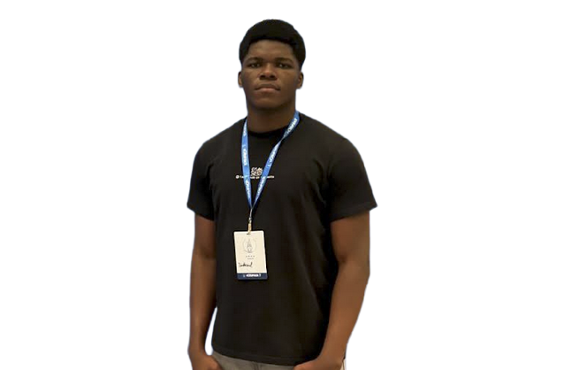
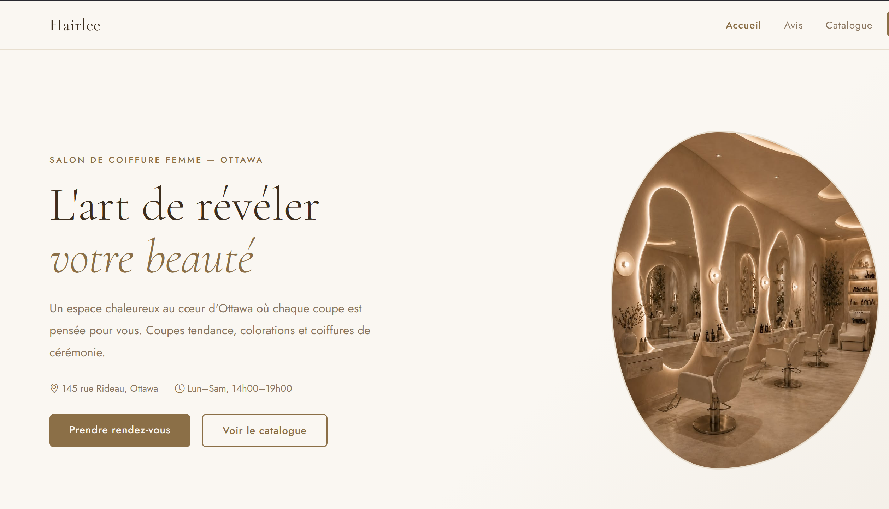
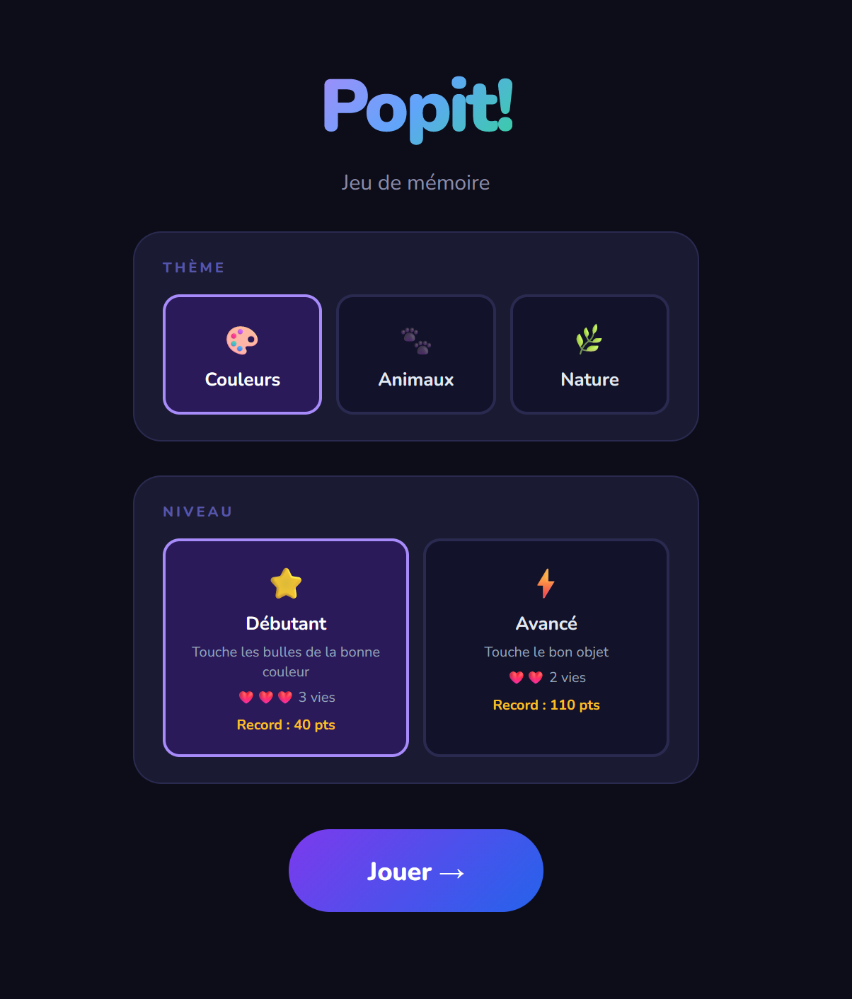
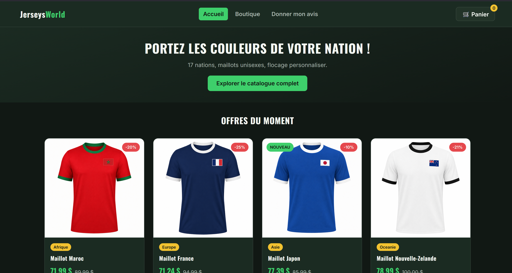
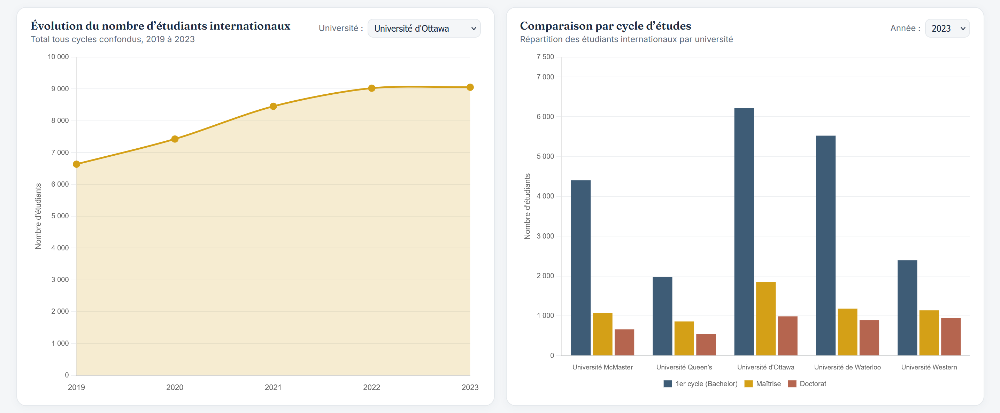

Bonjour, je suis
Étudiant curieux en génie logiciel, passionné par la création de solutions concrètes qui simplifient et améliorent le quotidien.
Étudiant en 3ème année en génie logiciel à l'Université d'Ottawa, avec une expérience pratique acquise lors d'un stage coop et de projets académiques concrets. Intérêt particulier pour le développement web et le développement back-end, avec un souci constant de construire des solutions fiables et efficaces.
Collaboration, communication et créativité au cœur de chaque projet. Cours SEG3525 – Conception et Analyse des Interfaces Usagers à l'Université d'Ottawa — principes de communication visuelle, design centré sur l'usager et évaluations heuristiques.
Étude des besoins et définition des critères de succès.
Architecture, wireframes et découpage en tâches claires.
Code propre et modulaire, versionné avec Git.
Tests unitaires, tests d'intégration et revue de code.
Collecte des retours et amélioration continue.
FRONTEND
BACKEND
OUTILS

Site de coiffure femme "Hairlee" conception CCU avec personas, scénarimages et réservation en ligne.

Jeu de mémoire interactif appliquant les principes de Gestalt et d'attention visuelle pour offrir une interface intuitive et engageante.

Développement d'une boutique en ligne avec gestion des produits, panier d'achat et interface de commande centrée sur l'expérience utilisateur.

Tableau de bord bilingue de visualisation de données permettant d'explorer et d'analyser des indicateurs clés de performance de façon claire et accessible.